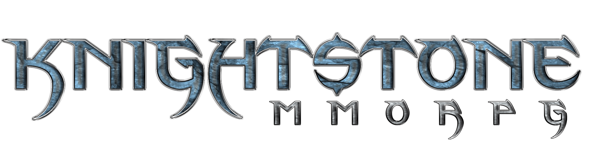

As the dust settles below the feet of a thousand men, Seridan of House Wyk, a Divinite to the Holy One, is within grasp of thwarting the strangle the Empire holds on the realm. His Crusade is spearheaded by The Knights of The Divin'rah, a faction of twelve noble houses fighting for one cause, one banner.
However, there is one cog left in the Empire's machine that must be eradicated to regain their prosperous realm. Seridan has been in a cat and mouse game with, General Mathias. During his hunt against his rival Mathias, he intercepts intriguing information regarding a shadowy cabal who worships the fallen God Vainspire, who may be pulling the strings behind the draping shadows of war. The tale of Seridan and his Knights take place between a decision to go after a conspiracy or to finally end the Empire's 700 year reign.
However, there is one cog left in the Empire's machine that must be eradicated to regain their prosperous realm. Seridan has been in a cat and mouse game with, General Mathias. During his hunt against his rival Mathias, he intercepts intriguing information regarding a shadowy cabal who worships the fallen God Vainspire, who may be pulling the strings behind the draping shadows of war. The tale of Seridan and his Knights take place between a decision to go after a conspiracy or to finally end the Empire's 700 year reign.